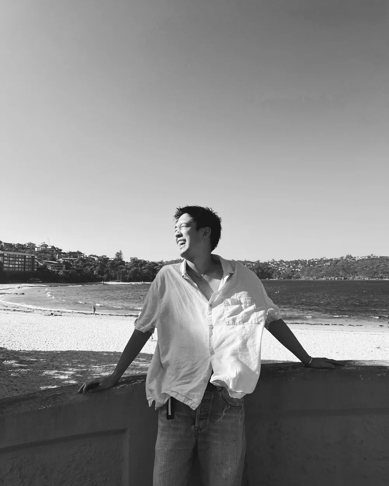

Aki — ช่างเจ้าของร้าน / ช่างสี
Aki เป็นช่างทำผมและช่างสีที่มีเชื้อสายญี่ปุ่นและไทย หลังจากฝึกฝนเทคนิคการตัดและทำสีแบบญี่ปุ่นในร้านที่ญี่ปุ่นเป็นเวลา 4 ปี เขาใช้เวลา 3 ปีในออสเตรเลียเพื่อเชี่ยวชาญงานฟอยล์และการออกแบบสีสำหรับเส้นผมหลากหลายประเภท พร้อมประสบการณ์เพิ่มเติมจากดูไบ
ในเดือนตุลาคม 2025 เขาเปิดร้าน Ciel Japanese Hair Studio ย่านพร้อมพงษ์ กรุงเทพฯ คำว่า "Ciel" แปลว่า "ท้องฟ้า" ในภาษาฝรั่งเศส — พื้นที่ที่เปิดกว้างสำหรับทุกคน
ความเชี่ยวชาญ
- สีโทนสว่าง & การฟอกที่ลดความเสียหาย — ออกแบบการฟอกให้เสียหายน้อยที่สุด และวางแผนสีจนถึงตอนสีจาง
- บาลายาจ & ไฮไลต์ — งานฟอยล์ที่ฝึกฝนในออสเตรเลีย
- ตัดผมสไตล์ญี่ปุ่นอย่างประณีต — รองรับทั้งเส้นผมเอเชียและตะวันตก
- เฮดสปาสไตล์ญี่ปุ่น — ซิกเนเจอร์ของ Ciel รวมถึงทรีตเมนต์ TOKIO
ประวัติ
- ญี่ปุ่น (4 ปี) — ทำงานในร้าน วางรากฐานการตัด ทำสี และความรู้ด้านผลิตภัณฑ์แบบญี่ปุ่น
- ออสเตรเลีย (3 ปี) — ดูแลลูกค้านานาชาติ เชี่ยวชาญงานฟอยล์และเส้นผมตะวันตก
- ดูไบ — ประสบการณ์ในสภาพแวดล้อมนานาชาติ
- ตุลาคม 2025 — เปิดร้าน Ciel Japanese Hair Studio ย่านพร้อมพงษ์ กรุงเทพฯ
- ปัจจุบัน — Fresha ★5.0 (รีวิวราว 200 รายการ) ให้บริการเป็นภาษาญี่ปุ่น อังกฤษ และไทย
ข้อความจากช่าง
"ด้วยรากเหง้าทั้งไทยและญี่ปุ่น ผมเชื่อว่าผมสามารถมอบคุณภาพเดียวกันให้กับทุกคนที่อาศัยในกรุงเทพฯ ทั้งคนญี่ปุ่น คนไทย และผู้คนจากทั่วโลก เล่าเรื่องผมและลุคที่คุณอยากได้ให้ผมฟังเป็นภาษาของคุณได้เลย"